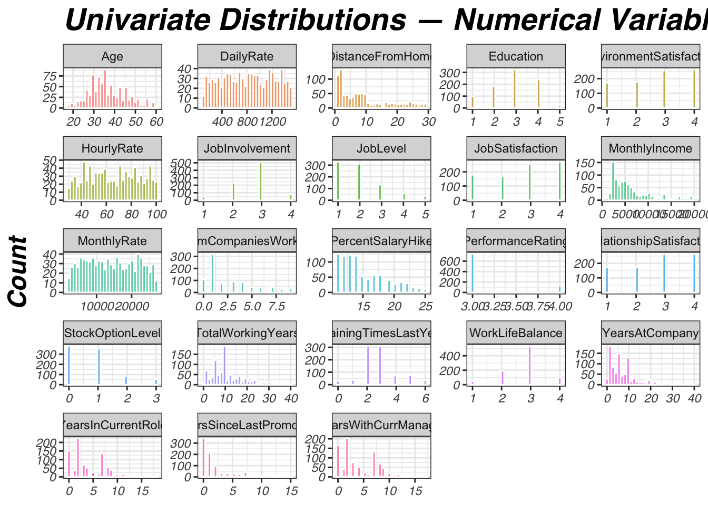
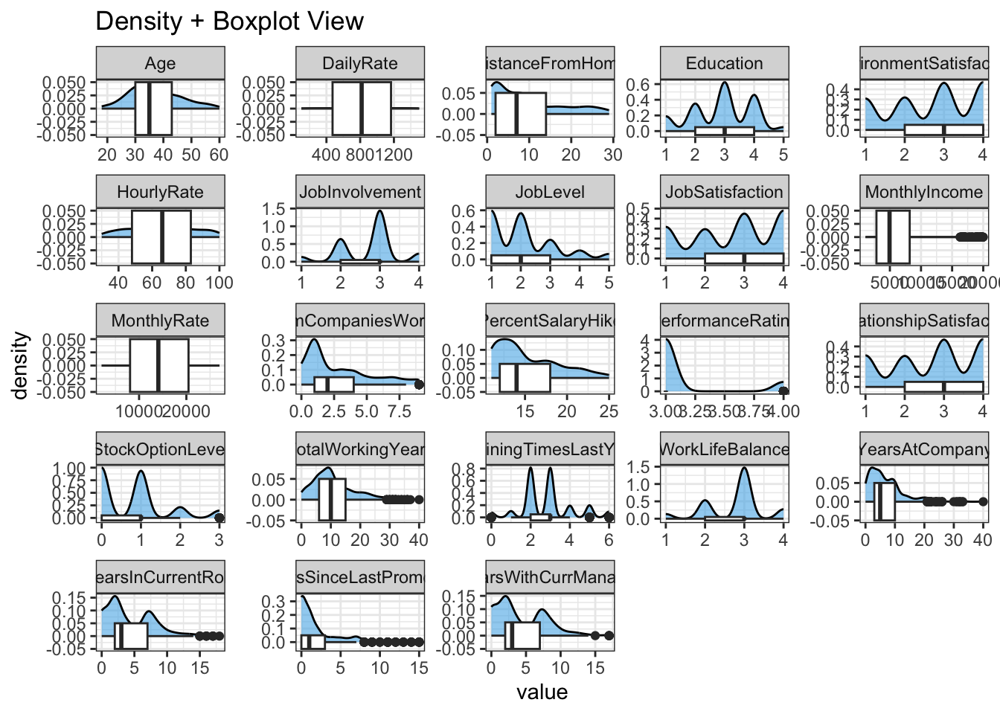
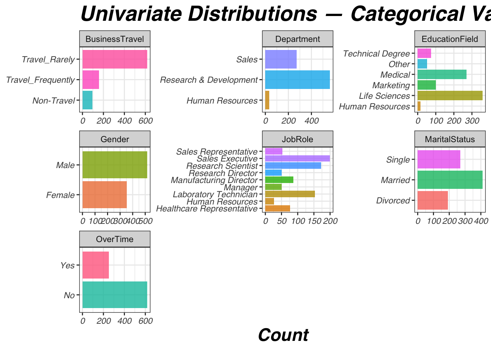
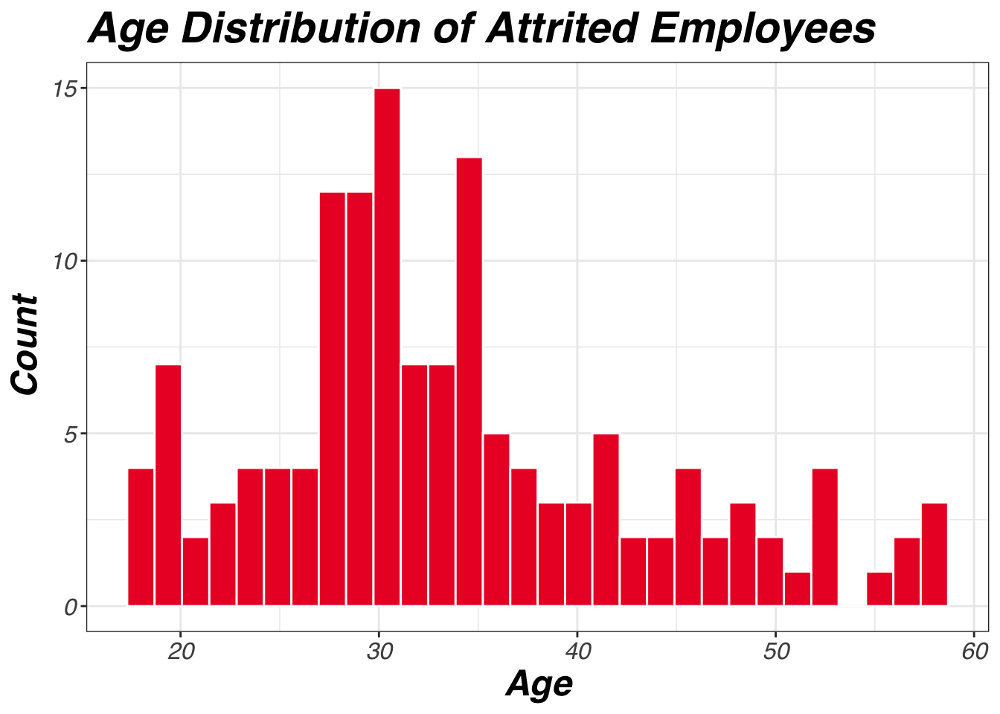
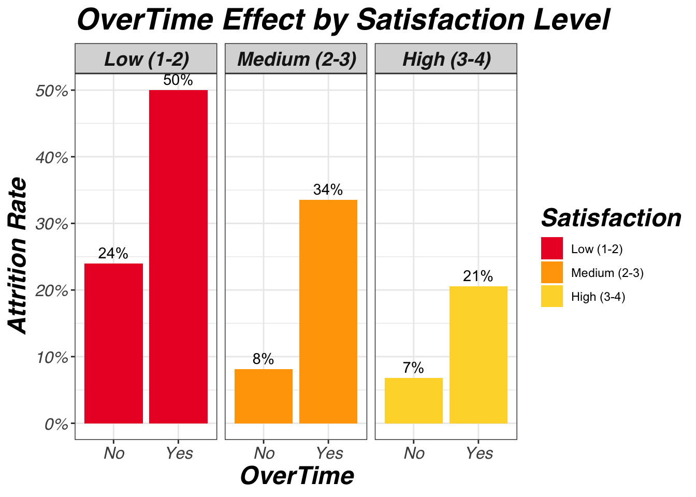
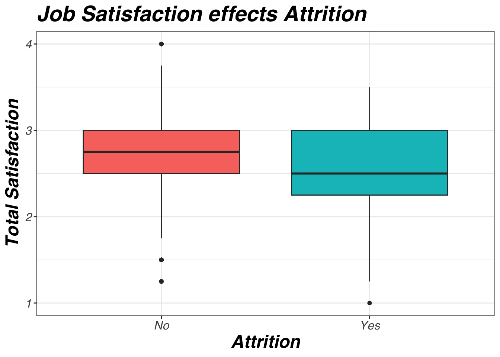
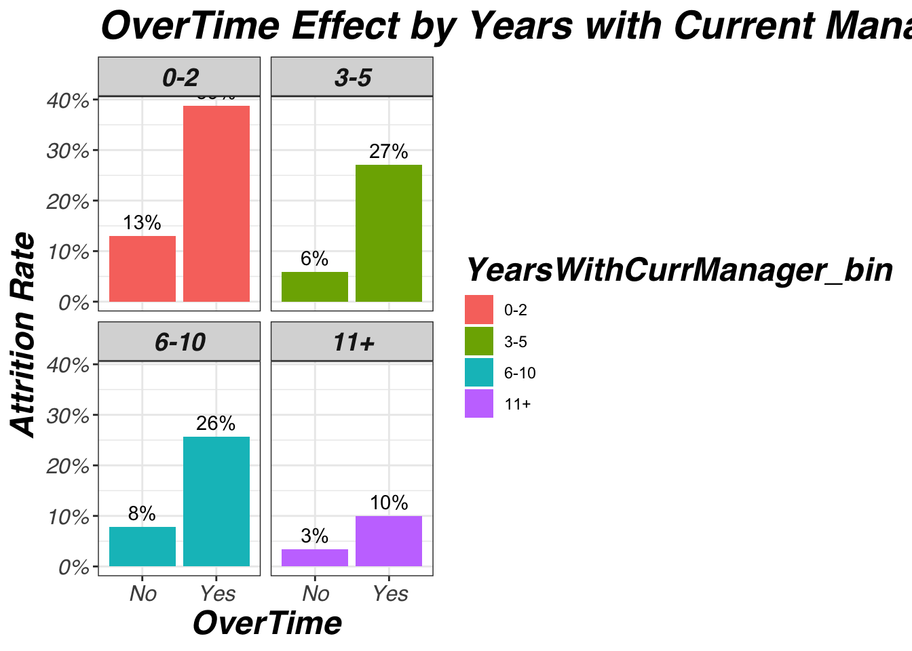
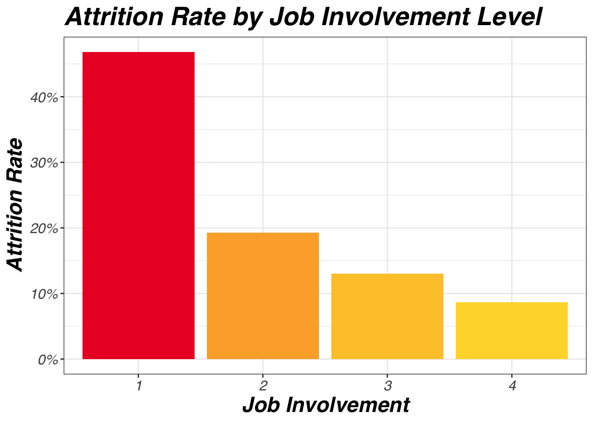
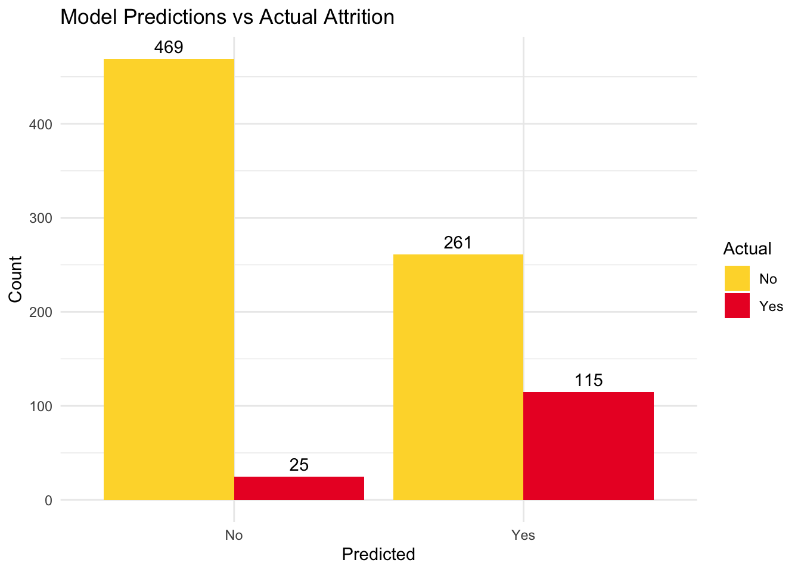
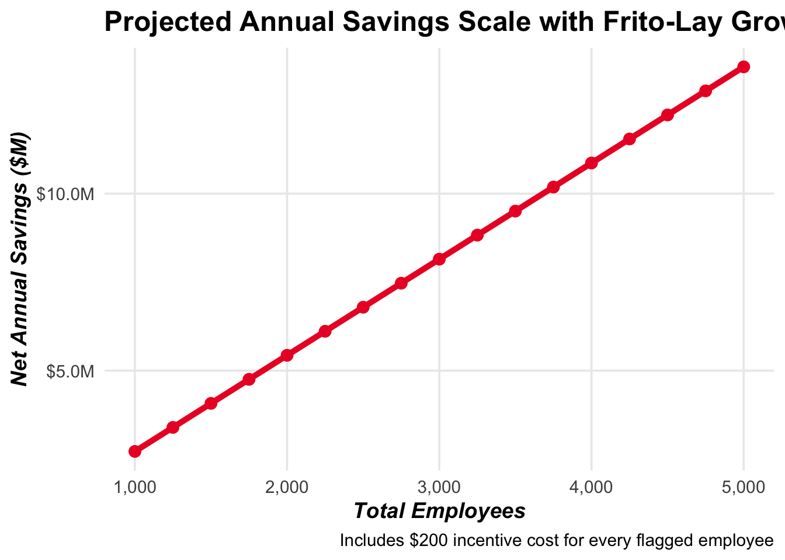

data <- read.csv('attrition_data.csv')
dim(data)
summary(data)Predicting FritoLays Attrition
R
Modeling
EDA
Analysis of employee attrition and predictive modeling with KNN and Naive Bayes classifiers.
Presentations
1 1. Import
2 2. Tidy
sum(is.na(data))[1] 0sum(is.null(data))[1] 0for (col in names(data)) {
if (is.character(data[[col]])) {
cat("Unique values in", col, ":\n")
print(unique(data[[col]]))
cat("\n")
}
}Unique values in Attrition :
[1] "No" "Yes"
Unique values in BusinessTravel :
[1] "Travel_Rarely" "Travel_Frequently" "Non-Travel"
Unique values in Department :
[1] "Sales" "Research & Development" "Human Resources"
Unique values in EducationField :
[1] "Life Sciences" "Medical" "Marketing" "Technical Degree"
[5] "Other" "Human Resources"
Unique values in Gender :
[1] "Male" "Female"
Unique values in JobRole :
[1] "Sales Executive" "Research Director"
[3] "Manufacturing Director" "Research Scientist"
[5] "Sales Representative" "Healthcare Representative"
[7] "Manager" "Human Resources"
[9] "Laboratory Technician"
Unique values in MaritalStatus :
[1] "Divorced" "Single" "Married"
Unique values in Over18 :
[1] "Y"
Unique values in OverTime :
[1] "No" "Yes"Since Attrition is our target variable check for imbalance.
str(data)'data.frame': 870 obs. of 36 variables:
$ ID : int 1 2 3 4 5 6 7 8 9 10 ...
$ Age : int 32 40 35 32 24 27 41 37 34 34 ...
$ Attrition : chr "No" "No" "No" "No" ...
$ BusinessTravel : chr "Travel_Rarely" "Travel_Rarely" "Travel_Frequently" "Travel_Rarely" ...
$ DailyRate : int 117 1308 200 801 567 294 1283 309 1333 653 ...
$ Department : chr "Sales" "Research & Development" "Research & Development" "Sales" ...
$ DistanceFromHome : int 13 14 18 1 2 10 5 10 10 10 ...
$ Education : int 4 3 2 4 1 2 5 4 4 4 ...
$ EducationField : chr "Life Sciences" "Medical" "Life Sciences" "Marketing" ...
$ EmployeeCount : int 1 1 1 1 1 1 1 1 1 1 ...
$ EmployeeNumber : int 859 1128 1412 2016 1646 733 1448 1105 1055 1597 ...
$ EnvironmentSatisfaction : int 2 3 3 3 1 4 2 4 3 4 ...
$ Gender : chr "Male" "Male" "Male" "Female" ...
$ HourlyRate : int 73 44 60 48 32 32 90 88 87 92 ...
$ JobInvolvement : int 3 2 3 3 3 3 4 2 3 2 ...
$ JobLevel : int 2 5 3 3 1 3 1 2 1 2 ...
$ JobRole : chr "Sales Executive" "Research Director" "Manufacturing Director" "Sales Executive" ...
$ JobSatisfaction : int 4 3 4 4 4 1 3 4 3 3 ...
$ MaritalStatus : chr "Divorced" "Single" "Single" "Married" ...
$ MonthlyIncome : int 4403 19626 9362 10422 3760 8793 2127 6694 2220 5063 ...
$ MonthlyRate : int 9250 17544 19944 24032 17218 4809 5561 24223 18410 15332 ...
$ NumCompaniesWorked : int 2 1 2 1 1 1 2 2 1 1 ...
$ Over18 : chr "Y" "Y" "Y" "Y" ...
$ OverTime : chr "No" "No" "No" "No" ...
$ PercentSalaryHike : int 11 14 11 19 13 21 12 14 19 14 ...
$ PerformanceRating : int 3 3 3 3 3 4 3 3 3 3 ...
$ RelationshipSatisfaction: int 3 1 3 3 3 3 1 3 4 2 ...
$ StandardHours : int 80 80 80 80 80 80 80 80 80 80 ...
$ StockOptionLevel : int 1 0 0 2 0 2 0 3 1 1 ...
$ TotalWorkingYears : int 8 21 10 14 6 9 7 8 1 8 ...
$ TrainingTimesLastYear : int 3 2 2 3 2 4 5 5 2 3 ...
$ WorkLifeBalance : int 2 4 3 3 3 2 2 3 3 2 ...
$ YearsAtCompany : int 5 20 2 14 6 9 4 1 1 8 ...
$ YearsInCurrentRole : int 2 7 2 10 3 7 2 0 1 2 ...
$ YearsSinceLastPromotion : int 0 4 2 5 1 1 0 0 0 7 ...
$ YearsWithCurrManager : int 3 9 2 7 3 7 3 0 0 7 ...table(data$Attrition) # Low positive rate, could be difficult to get good specificity
No Yes
730 140 # Recognizing attrition should be factor to ensure positive is Yes for modeling
data <- data %>% mutate(Attrition = factor(Attrition, levels = c('No','Yes')))# Summary of Attrition variable
attrition_summary <- data %>%
count(Attrition) %>%
mutate(Percentage = round(n / sum(n) * 100, 1))
print(attrition_summary) Attrition n Percentage
1 No 730 83.9
2 Yes 140 16.1Strong imbalance will make sensitivity difficult to maximize.
2.1 2.1 Constants and Sequential
Dropping these variables as they provide no predictive power.
data = select(data, -c(
'EmployeeCount', # All 1s
'Over18', # All Yes,
'EmployeeNumber', # sequential
'ID',
'StandardHours' # All 80
))2.2 2.2 Feature Selection
Updated recurring throughout EDA and modeling.
optimized_data = data %>%
mutate(
TotalSatisfaction = (
EnvironmentSatisfaction +
JobSatisfaction +
RelationshipSatisfaction +
WorkLifeBalance) / 4) %>%
select(-c(
'DailyRate', 'HourlyRate', 'MonthlyRate', # See 3.5.2
'BusinessTravel', 'Education', 'EducationField', 'Gender', # See 3.1.2
'YearsAtCompany', 'YearsInCurrentRole', 'YearsSinceLastPromotion', # See 3.1.1
'PercentSalaryHike', 'PerformanceRating', # See 3.1.1
'TotalWorkingYears', 'TrainingTimesLastYear', # Tenure metric chosen YearsWithCurrManager
'EnvironmentSatisfaction', 'JobSatisfaction', 'RelationshipSatisfaction', 'WorkLifeBalance' # Derive TotalSatisfaction
))3 3. Exploratory Data Analysis (EDA)
3.1 3.1 Quick summaries
3.1.1 3.1.1 Correlation Matrix for numeric variables
Run prior to section 4.2 transformations for understanding paired data.
numeric_data <- optimized_data %>% select(where(is.numeric))
cor_matrix <- cor(numeric_data, use = "pairwise.complete.obs")
print(round(cor_matrix, 2)) Age DistanceFromHome JobInvolvement JobLevel
Age 1.00 0.01 0.02 0.48
DistanceFromHome 0.01 1.00 0.00 0.02
JobInvolvement 0.02 0.00 1.00 -0.02
JobLevel 0.48 0.02 -0.02 1.00
MonthlyIncome 0.48 -0.01 0.00 0.95
NumCompaniesWorked 0.29 -0.05 -0.01 0.14
StockOptionLevel 0.04 0.07 0.07 0.02
YearsWithCurrManager 0.19 -0.02 0.01 0.37
TotalSatisfaction -0.02 -0.02 -0.02 -0.02
MonthlyIncome NumCompaniesWorked StockOptionLevel
Age 0.48 0.29 0.04
DistanceFromHome -0.01 -0.05 0.07
JobInvolvement 0.00 -0.01 0.07
JobLevel 0.95 0.14 0.02
MonthlyIncome 1.00 0.16 0.02
NumCompaniesWorked 0.16 1.00 0.03
StockOptionLevel 0.02 0.03 1.00
YearsWithCurrManager 0.33 -0.12 0.04
TotalSatisfaction -0.03 0.00 0.01
YearsWithCurrManager TotalSatisfaction
Age 0.19 -0.02
DistanceFromHome -0.02 -0.02
JobInvolvement 0.01 -0.02
JobLevel 0.37 -0.02
MonthlyIncome 0.33 -0.03
NumCompaniesWorked -0.12 0.00
StockOptionLevel 0.04 0.01
YearsWithCurrManager 1.00 -0.01
TotalSatisfaction -0.01 1.00cor_melt <- melt(cor_matrix)
cor_melt <- cor_melt[cor_melt$Var1 != cor_melt$Var2, ] # Remove self-correlations
# Sort by absolute correlation (descending)
cor_melt <- cor_melt[order(-abs(cor_melt$value)), ]
print(cor_melt) Var1 Var2 value
32 MonthlyIncome JobLevel 0.9516400488
40 JobLevel MonthlyIncome 0.9516400488
5 MonthlyIncome Age 0.4842883010
37 Age MonthlyIncome 0.4842883010
4 JobLevel Age 0.4794235642
28 Age JobLevel 0.4794235642
35 YearsWithCurrManager JobLevel 0.3665674724
67 JobLevel YearsWithCurrManager 0.3665674724
44 YearsWithCurrManager MonthlyIncome 0.3284874527
68 MonthlyIncome YearsWithCurrManager 0.3284874527
6 NumCompaniesWorked Age 0.2935218773
46 Age NumCompaniesWorked 0.2935218773
8 YearsWithCurrManager Age 0.1853837950
64 Age YearsWithCurrManager 0.1853837950
42 NumCompaniesWorked MonthlyIncome 0.1558943184
50 MonthlyIncome NumCompaniesWorked 0.1558943184
33 NumCompaniesWorked JobLevel 0.1408348284
49 JobLevel NumCompaniesWorked 0.1408348284
53 YearsWithCurrManager NumCompaniesWorked -0.1229746810
69 NumCompaniesWorked YearsWithCurrManager -0.1229746810
25 StockOptionLevel JobInvolvement 0.0723029729
57 JobInvolvement StockOptionLevel 0.0723029729
16 StockOptionLevel DistanceFromHome 0.0716804281
56 DistanceFromHome StockOptionLevel 0.0716804281
15 NumCompaniesWorked DistanceFromHome -0.0489092444
47 DistanceFromHome NumCompaniesWorked -0.0489092444
7 StockOptionLevel Age 0.0447595755
55 Age StockOptionLevel 0.0447595755
62 YearsWithCurrManager StockOptionLevel 0.0365425741
70 StockOptionLevel YearsWithCurrManager 0.0365425741
52 StockOptionLevel NumCompaniesWorked 0.0328872107
60 NumCompaniesWorked StockOptionLevel 0.0328872107
45 TotalSatisfaction MonthlyIncome -0.0328046097
77 MonthlyIncome TotalSatisfaction -0.0328046097
9 TotalSatisfaction Age -0.0232696737
73 Age TotalSatisfaction -0.0232696737
13 JobLevel DistanceFromHome 0.0217270544
29 DistanceFromHome JobLevel 0.0217270544
36 TotalSatisfaction JobLevel -0.0193385745
76 JobLevel TotalSatisfaction -0.0193385745
43 StockOptionLevel MonthlyIncome 0.0188887219
59 MonthlyIncome StockOptionLevel 0.0188887219
34 StockOptionLevel JobLevel 0.0188872312
58 JobLevel StockOptionLevel 0.0188872312
17 YearsWithCurrManager DistanceFromHome -0.0177006119
65 DistanceFromHome YearsWithCurrManager -0.0177006119
18 TotalSatisfaction DistanceFromHome -0.0176005016
74 DistanceFromHome TotalSatisfaction -0.0176005016
27 TotalSatisfaction JobInvolvement -0.0170514286
75 JobInvolvement TotalSatisfaction -0.0170514286
3 JobInvolvement Age 0.0160732956
19 Age JobInvolvement 0.0160732956
22 JobLevel JobInvolvement -0.0158750522
30 JobInvolvement JobLevel -0.0158750522
26 YearsWithCurrManager JobInvolvement 0.0108872824
66 JobInvolvement YearsWithCurrManager 0.0108872824
72 TotalSatisfaction YearsWithCurrManager -0.0107808642
80 YearsWithCurrManager TotalSatisfaction -0.0107808642
63 TotalSatisfaction StockOptionLevel 0.0104586236
79 StockOptionLevel TotalSatisfaction 0.0104586236
14 MonthlyIncome DistanceFromHome -0.0066671546
38 DistanceFromHome MonthlyIncome -0.0066671546
2 DistanceFromHome Age 0.0066471121
10 Age DistanceFromHome 0.0066471121
24 NumCompaniesWorked JobInvolvement -0.0056138446
48 JobInvolvement NumCompaniesWorked -0.0056138446
12 JobInvolvement DistanceFromHome -0.0042775053
20 DistanceFromHome JobInvolvement -0.0042775053
54 TotalSatisfaction NumCompaniesWorked -0.0042247898
78 NumCompaniesWorked TotalSatisfaction -0.0042247898
23 MonthlyIncome JobInvolvement 0.0004473792
39 JobInvolvement MonthlyIncome 0.0004473792# Visualize correlations (requires corrplot package)
library(corrplot)
corrplot(
cor_matrix,
method = "circle",
type = "upper",
tl.cex = 0.8,
order = 'hclust',
hclust.method = 'ward'
)-1.png)
# Full correlation matrix as heatmap
cor_melt <- melt(cor_matrix)
cor_melt <- cor_melt[cor_melt$Var1 != cor_melt$Var2, ] # Remove self-correlations
ggplot(cor_melt, aes(x = Var1, y = Var2, fill = value)) +
geom_tile(color = "white") +
scale_fill_gradient2(low = "blue", mid = "white", high = "red", midpoint = 0, limits = c(-1, 1)) +
labs(title = "Correlation Matrix",
x = "", y = "",
fill = "Correlation") +
theme_bw() +
theme(
axis.text.x = element_text(angle = 45, hjust = 1, size = 8),
axis.text.y = element_text(size = 8),
title = element_text(size = 14, face = "bold"),
plot.margin = margin(1, 1, 1, 1, "cm")
)-2.png)
# Get top correlated pairs without duplicates
pairs <- cor_melt %>%
filter(as.character(Var1) < as.character(Var2)) %>% # Remove duplicates
arrange(desc(abs(value))) # Sort by absolute correlation
write.csv(pairs, "pairs.csv", row.names = FALSE)Keeping two paired variables as single inputs to a model may bias it.
3.1.2 3.1.2 Chi-Squared tests for categorical variables
Correlation finds relationship between numerical values, use chi-squared test for categorical value association. Hypothesis: H0 = No association between predictor and Attrition; H1 = Association exists. Using cramer’s V measurement for feature selection
cat_vars <- names(data)[sapply(data, is.character) | sapply(data, is.factor)]
cat_vars <- setdiff(cat_vars, "Attrition") # Exclude target
# Initialize results data frame
table_results <- data.frame(Variable = character(), CramersV = numeric())
for (var in cat_vars) {
cat("\n=== Contingency Table for", var, "vs. Attrition ===\n")
table_result <- table(data[[var]], data$Attrition)
print(table_result)
# Chi-square test (use simulate.p.value for small expected counts to avoid warnings)
chi_test <- chisq.test(table_result, simulate.p.value = TRUE)
print(chi_test)
# Cramér's V for strength of association (0-1 scale)
v_value <- cramersV(table_result)
cat("Cramér's V:", round(v_value, 3), "\n")
# Append to results data frame
table_results <- rbind(table_results, data.frame(Variable = var, CramersV = v_value))
}
=== Contingency Table for BusinessTravel vs. Attrition ===
No Yes
Non-Travel 83 11
Travel_Frequently 123 35
Travel_Rarely 524 94
Pearson's Chi-squared test with simulated p-value (based on 2000
replicates)
data: table_result
X-squared = 5.9945, df = NA, p-value = 0.04398
Cramér's V: 0.083
=== Contingency Table for Department vs. Attrition ===
No Yes
Human Resources 29 6
Research & Development 487 75
Sales 214 59
Pearson's Chi-squared test with simulated p-value (based on 2000
replicates)
data: table_result
X-squared = 9.329, df = NA, p-value = 0.008996
Cramér's V: 0.104
=== Contingency Table for EducationField vs. Attrition ===
No Yes
Human Resources 11 4
Life Sciences 305 53
Marketing 80 20
Medical 233 37
Other 43 9
Technical Degree 58 17
Pearson's Chi-squared test with simulated p-value (based on 2000
replicates)
data: table_result
X-squared = 6.4114, df = NA, p-value = 0.2679Cramér's V: 0.086
=== Contingency Table for Gender vs. Attrition ===
No Yes
Female 301 53
Male 429 87
Pearson's Chi-squared test with simulated p-value (based on 2000
replicates)
data: table_result
X-squared = 0.55469, df = NA, p-value = 0.5407
Cramér's V: 0.022
=== Contingency Table for JobRole vs. Attrition ===
No Yes
Healthcare Representative 68 8
Human Resources 21 6
Laboratory Technician 123 30
Manager 47 4
Manufacturing Director 85 2
Research Director 50 1
Research Scientist 140 32
Sales Executive 167 33
Sales Representative 29 24
Pearson's Chi-squared test with simulated p-value (based on 2000
replicates)
data: table_result
X-squared = 60.543, df = NA, p-value = 0.0004998Cramér's V: 0.264
=== Contingency Table for MaritalStatus vs. Attrition ===
No Yes
Divorced 179 12
Married 352 58
Single 199 70
Pearson's Chi-squared test with simulated p-value (based on 2000
replicates)
data: table_result
X-squared = 34.406, df = NA, p-value = 0.0004998
Cramér's V: 0.199
=== Contingency Table for OverTime vs. Attrition ===
No Yes
No 558 60
Yes 172 80
Pearson's Chi-squared test with simulated p-value (based on 2000
replicates)
data: table_result
X-squared = 64.383, df = NA, p-value = 0.0004998
Cramér's V: 0.269 # Bar chart for Cramér's V
ggplot(table_results, aes(x = reorder(Variable, CramersV), y = CramersV)) +
geom_bar(stat = "identity", fill = "#EB192C") +
coord_flip() +
labs(title = "Cramér's V vs Attrition",
x = "Variable",
y = "Cramér's V") +
theme_bw() +
theme(
legend.position = 'none',
title = element_text(family = 'sans', face = 'bold.italic', size = 18),
axis.text = element_text(family = 'sans', face = 'italic')
)-1.png)
Require more formal test: MaritalStatus vs Attrition p-value: .004998 OverTime vs Attrition p-value: .0004998
Further exploration in 3.5.1: Department vs Attrition p-value: .01049 JobRole vs Attrition p-value: .0004998
Not very strong results to justify further investigation: BusinessTravel vs Attrition p-value: .04898 Cramer’s V: .083 EducationField vs Attrition p-value: .2769 Cramer’s V: .086 Gender vs Attrition p-value: .5117 Cramer’s V: .022
3.2 3.2 Distributions and Visuals
data %>%
select(where(is.numeric)) %>%
pivot_longer(everything()) %>%
ggplot(aes(x = value, fill = name)) +
geom_histogram(bins = 30, alpha = 0.7, color = "white") +
facet_wrap(~ name, scales = "free") +
labs(title = "Univariate Distributions — Numerical Variables",
x = NULL, y = "Count") +
theme_bw() +
theme(
legend.position = 'none',
title = element_text(family = 'sans', face = 'bold.italic', size = 18),
axis.text = element_text(family = 'sans', face = 'italic')
)
# Alternative: density + boxplot combo
data %>%
select(where(is.numeric)) %>%
pivot_longer(everything()) %>%
ggplot(aes(x = value)) +
geom_density(fill = "#56B4E9", alpha = 0.6) +
geom_boxplot(width = 0.1, fill = "white") +
facet_wrap(~ name, scales = "free") +
labs(title = "Density + Boxplot View") +
theme_bw()
# Categorical Variables
data %>% select(-Attrition) %>%
select(where(is.factor) | where(is.character)) %>%
pivot_longer(everything()) %>%
ggplot(aes(x = value, fill = value)) +
geom_bar(alpha = 0.8) +
facet_wrap(~ name, scales = "free") +
coord_flip() +
labs(title = "Univariate Distributions — Categorical Variables",
x = NULL, y = "Count") +
theme_bw() +
theme(
legend.position = 'none',
title = element_text(family = 'sans', face = 'bold.italic', size = 18),
axis.text = element_text(family = 'sans', face = 'italic')
)
# Attrition by age
data %>%
filter(Attrition == "Yes") %>%
ggplot(aes(x = Age)) +
geom_histogram(fill = "#EB192C", bins = 30, color = 'white') +
labs(title = "Age Distribution of Attrited Employees",
x = "Age",
y = "Count") +
theme_bw() +
theme(
title = element_text(family = 'sans', face = 'bold.italic', size = 18),
axis.text = element_text(family = 'sans', face = 'italic', size = 12)
)
# Filter to attrited employees
attrited_data <- data %>% filter(Attrition == "Yes")
# Define multipliers based on JobLevel
multipliers <- c("1" = 0.3, "2" = 0.5, "3" = 1.25, "4" = 1.5, "5" = 4.0)
# Calculate annualized cost for each employee
attrited_data <- attrited_data %>%
mutate(
AnnualizedIncome = MonthlyIncome * 12,
Multiplier = multipliers[as.character(JobLevel)],
CostOfLoss = AnnualizedIncome * Multiplier
)
# Summarize total cost by JobLevel
cost_by_level <- attrited_data %>%
group_by(JobLevel) %>%
summarize(
TotalCost = sum(CostOfLoss, na.rm = TRUE),
.groups = "drop"
)
# Bar chart for costs by job level
ggplot(cost_by_level, aes(x = factor(JobLevel), y = TotalCost / 1e6)) +
geom_bar(stat = "identity", fill = "#EB192C", color = 'white') +
geom_text(aes(label = paste0("$", round(TotalCost / 1e6, 1), "M")),
vjust = -0.5, size = 5) +
labs(title = "Replacement Costs",
x = "Job Level",
y = "") +
theme_bw() +
theme(
title = element_text(family = 'sans', face = 'bold.italic', size = 18),
axis.text = element_text(family = 'sans', face = 'italic', size = 12),
axis.text.y = element_blank()
)
3.3 3.3 Multivariate relationships
# Compute correlations of numeric variables with Attrition (as binary)
numeric_vars <- data %>% select(where(is.numeric))
numeric_vars$Attrition_Num <- as.numeric(data$Attrition == "Yes")
# Correlation matrix
cor_matrix <- cor(numeric_vars, use = "pairwise.complete.obs")
# Extract correlations with Attrition_Num
cor_with_attrition <- cor_matrix["Attrition_Num", -ncol(cor_matrix)] # Exclude self-correlation
# Sort by absolute value descending
cor_with_attrition <- sort(abs(cor_with_attrition), decreasing = TRUE)
print(cor_with_attrition) JobInvolvement TotalWorkingYears JobLevel
0.187793409 0.167206122 0.162136444
YearsInCurrentRole MonthlyIncome Age
0.156215707 0.154914955 0.149383577
StockOptionLevel YearsWithCurrManager YearsAtCompany
0.148680303 0.146782245 0.128754060
JobSatisfaction WorkLifeBalance DistanceFromHome
0.107520935 0.089789709 0.087136293
EnvironmentSatisfaction TrainingTimesLastYear NumCompaniesWorked
0.077325405 0.062726088 0.061018887
Education MonthlyRate RelationshipSatisfaction
0.049442357 0.043232173 0.039646611
HourlyRate DailyRate PerformanceRating
0.036554178 0.033793125 0.015333837
PercentSalaryHike YearsSinceLastPromotion
0.015328069 0.004573321 # Create a data frame for visualization
cor_df <- data.frame(Variable = names(cor_with_attrition), Correlation = cor_with_attrition)
# Bar chart of absolute correlations
ggplot(cor_df, aes(x = reorder(Variable, Correlation), y = Correlation)) +
geom_bar(stat = "identity", fill = "#EB192C") +
coord_flip() +
labs(title = "Correlate with Attrition (Numeric)",
x = "Variable",
y = "Correlation") +
theme_bw() +
theme_bw() +
theme(
title = element_text(family = 'sans', face = 'bold.italic', size = 18),
axis.text = element_text(family = 'sans', face = 'bold.italic', size = 16)
)
ggplot(data, aes(x = Age, y = MonthlyIncome, color = Attrition)) +
geom_point(alpha = 0.6) +
facet_wrap(~ Department) +
labs(title = "Age vs Monthly Income by Department and Attrition") +
theme_bw()
satisfaction_summary <- data %>%
group_by(JobSatisfaction, EnvironmentSatisfaction, Attrition) %>%
summarise(Count = n(), .groups = "drop")
ggplot(satisfaction_summary, aes(x = factor(JobSatisfaction), y = factor(EnvironmentSatisfaction), fill = Count)) +
geom_tile() +
facet_wrap(~ Attrition) +
labs(title = "Job vs Environment Satisfaction by Attrition") +
theme_minimal()
3.4 3.4 Missing values & outliers
3.5 3.5 Initial insights & hypotheses
3.5.2 3.5.2 Which Pay Variable should be relied on?
There are several pay variables: DailyRate, HourlyRate, MonthlyRate, MonthlyIncome.
First, we should be able to see a mathmatical correlation between Daily, Hourly and Monthly rate.
summary(data[, c("DailyRate", "HourlyRate", "MonthlyRate")]) DailyRate HourlyRate MonthlyRate
Min. : 103.0 Min. : 30.00 Min. : 2094
1st Qu.: 472.5 1st Qu.: 48.00 1st Qu.: 8092
Median : 817.5 Median : 66.00 Median :14074
Mean : 815.2 Mean : 65.61 Mean :14326
3rd Qu.:1165.8 3rd Qu.: 83.00 3rd Qu.:20456
Max. :1499.0 Max. :100.00 Max. :26997 ratios <- data.frame(
Ratio_Type = c("Monthly / (Hourly * 160)", "Monthly / (Daily * 20)", "Daily / (Hourly * 8)"),
Average_Ratio = c(
mean(data$MonthlyRate / (data$HourlyRate * 160)),
mean(data$MonthlyRate / (data$DailyRate * 20)),
mean(data$DailyRate / (data$HourlyRate * 8)) # assuming 8 hours per day
)
)
print(ratios) Ratio_Type Average_Ratio
1 Monthly / (Hourly * 160) 1.524708
2 Monthly / (Daily * 20) 1.334845
3 Daily / (Hourly * 8) 1.718536The resulting ratios do not equal 1, likely from synthetic data generation. Next, determine relevance as a variable by visualizing a relationship between attrition and each variable.
# Facet wrap histograms for pay rates
data %>%
filter(Attrition == "Yes") %>%
select(HourlyRate, DailyRate, MonthlyRate, MonthlyIncome) %>%
pivot_longer(everything(), names_to = "Variable", values_to = "Value") %>%
ggplot(aes(x = Value)) +
geom_histogram(fill = "#EB192C", bins = 30) +
facet_wrap(~ Variable, scales = "free") +
labs(title = "Attrition by Pay Rates",
x = "Value", y = "Count") +
theme_bw() +
theme(
title = element_text(family = 'sans', face = 'bold.italic', size = 18),
axis.text = element_text(family = 'sans', face = 'bold.italic', size = 16)
)
MonthlyIncome shows a right skewed distribution and all others are non-normal or provide no indicators. Checking for correlation to chose best features for models.
# Correlation matrix for pay rates
cor_matrix <- data %>%
select(contains("Rate"), MonthlyIncome) %>%
cor(use = "pairwise.complete.obs")
# Melt for heatmap
cor_melt <- melt(cor_matrix)
# Heatmap visual
ggplot(cor_melt, aes(x = Var1, y = Var2, fill = value)) +
geom_tile(color = "white") +
geom_text(aes(label = round(value, 2)), color = "black", size = 4) +
scale_fill_gradient2(low = "#EB192C", mid = "white", high = "#FDD836", midpoint = 0, limits = c(-1, 1)) +
labs(title = "Correlation Matrix of Pay Rates",
x = "", y = "",
fill = "Correlation") +
theme_bw() +
theme(
title = element_text(family = 'sans', face = 'bold.italic', size = 18),
axis.text = element_text(family = 'sans', face = 'bold.italic', size = 16),
axis.text.x = element_text(angle = 15, hjust = 1)
)
These variables have nearly no relevant correlation. MonthlyIncome provides a strong dataset for predicting attrition. Consider dropping HourlyRate, DailyRate, MonthlyRate, and keeping MonthlyIncome in feature selection.
3.5.3 3.5.3 What is the significance of each variable in optimized_data?
Visualize and represent mathmatically which variables are most impacting attrition among our optimized_data set to verify our current retained and engineered variables.
# Baseline comparison and check on assumed important variables
logit_full <- glm(
Attrition ~ .,
data = data %>%
mutate(Attrition = factor(Attrition, levels = c("No", "Yes"))),
family = binomial(link = "logit")
)
# Clean summary (only significant variables)
library(broom)
tidy(logit_full, exponentiate = TRUE, conf.int = TRUE) %>%
filter(p.value < 0.05) %>%
select(term, estimate, conf.low, conf.high, p.value) %>%
mutate(odds_ratio = round(estimate, 2),
p_value = round(p.value, 4)) %>%
arrange(desc(odds_ratio))# A tibble: 16 × 7
term estimate conf.low conf.high p.value odds_ratio p_value
<chr> <dbl> <dbl> <dbl> <dbl> <dbl> <dbl>
1 OverTimeYes 7.45 4.53 12.6 9.72e-15 7.45 0
2 MaritalStatusSingle 5.90 2.21 17.0 6.05e- 4 5.9 0.0006
3 BusinessTravelTravel… 4.86 1.81 14.1 2.43e- 3 4.86 0.0024
4 MaritalStatusMarried 2.55 1.15 6.08 2.68e- 2 2.55 0.0268
5 NumCompaniesWorked 1.28 1.15 1.43 7.20e- 6 1.28 0
6 YearsSinceLastPromot… 1.28 1.14 1.45 4.74e- 5 1.28 0
7 DistanceFromHome 1.05 1.02 1.08 7.42e- 4 1.05 0.0007
8 TotalWorkingYears 0.900 0.827 0.976 1.23e- 2 0.9 0.0123
9 YearsInCurrentRole 0.877 0.776 0.989 3.32e- 2 0.88 0.0332
10 YearsWithCurrManager 0.854 0.752 0.971 1.49e- 2 0.85 0.0149
11 RelationshipSatisfac… 0.772 0.621 0.956 1.80e- 2 0.77 0.018
12 TrainingTimesLastYear 0.749 0.608 0.917 5.86e- 3 0.75 0.0059
13 EnvironmentSatisfact… 0.702 0.557 0.881 2.44e- 3 0.7 0.0024
14 JobSatisfaction 0.612 0.488 0.761 1.41e- 5 0.61 0
15 WorkLifeBalance 0.566 0.404 0.789 8.52e- 4 0.57 0.0009
16 JobInvolvement 0.453 0.321 0.632 4.53e- 6 0.45 0 YearsInCurrentRole p-value = .283 but is left out of our model since it correlates highly with YearsWithCurrManager. Same with YearsSinceLastPromotion which did not correlated well with Attrition.
Potential for derived statistic in YearsInCurrentRole, YearsWithCurrManager and TotalWorkingYears.
# effect while controlling for everything except categorical variables (JobROle, Departmnet) that create seperation for this model.
logit_model <- glm(
Attrition ~ OverTime + Age + DistanceFromHome + JobInvolvement + JobLevel + MaritalStatus + NumCompaniesWorked + StockOptionLevel + YearsWithCurrManager + TotalSatisfaction + MonthlyIncome,
data = optimized_data, family = binomial)
summary(logit_model)
Call:
glm(formula = Attrition ~ OverTime + Age + DistanceFromHome +
JobInvolvement + JobLevel + MaritalStatus + NumCompaniesWorked +
StockOptionLevel + YearsWithCurrManager + TotalSatisfaction +
MonthlyIncome, family = binomial, data = optimized_data)
Coefficients:
Estimate Std. Error z value Pr(>|z|)
(Intercept) 3.225e+00 9.326e-01 3.458 0.000544 ***
OverTimeYes 1.702e+00 2.221e-01 7.662 1.83e-14 ***
Age -3.810e-02 1.481e-02 -2.573 0.010093 *
DistanceFromHome 3.713e-02 1.306e-02 2.843 0.004471 **
JobInvolvement -6.967e-01 1.495e-01 -4.661 3.15e-06 ***
JobLevel -2.969e-01 3.439e-01 -0.863 0.387987
MaritalStatusMarried 8.632e-01 3.737e-01 2.310 0.020892 *
MaritalStatusSingle 1.535e+00 4.517e-01 3.398 0.000679 ***
NumCompaniesWorked 1.344e-01 4.367e-02 3.077 0.002089 **
StockOptionLevel -1.577e-01 1.805e-01 -0.874 0.382277
YearsWithCurrManager -7.337e-02 3.776e-02 -1.943 0.052012 .
TotalSatisfaction -1.161e+00 2.168e-01 -5.353 8.66e-08 ***
MonthlyIncome -2.108e-05 8.419e-05 -0.250 0.802293
---
Signif. codes: 0 '***' 0.001 '**' 0.01 '*' 0.05 '.' 0.1 ' ' 1
(Dispersion parameter for binomial family taken to be 1)
Null deviance: 767.67 on 869 degrees of freedom
Residual deviance: 565.36 on 857 degrees of freedom
AIC: 591.36
Number of Fisher Scoring iterations: 6# Create multiples for reporting
tidy(logit_model, exponentiate = TRUE, conf.int = TRUE) %>%
filter(p.value < 0.05) %>%
mutate(
odds_ratio = round(estimate, 2),
lower_95 = round(conf.low, 2),
upper_95 = round(conf.high, 2),
p_value = round(p.value, 4)
) %>%
select(term, odds_ratio, lower_95, upper_95, p_value) %>%
arrange(desc(odds_ratio))# A tibble: 9 × 5
term odds_ratio lower_95 upper_95 p_value
<chr> <dbl> <dbl> <dbl> <dbl>
1 (Intercept) 25.2 4.11 160. 0.0005
2 OverTimeYes 5.48 3.57 8.53 0
3 MaritalStatusSingle 4.64 1.97 11.7 0.0007
4 MaritalStatusMarried 2.37 1.17 5.13 0.0209
5 NumCompaniesWorked 1.14 1.05 1.25 0.0021
6 DistanceFromHome 1.04 1.01 1.06 0.0045
7 Age 0.96 0.93 0.99 0.0101
8 JobInvolvement 0.5 0.37 0.67 0
9 TotalSatisfaction 0.31 0.2 0.48 0 Ordered by z-score:
There is strong evidence to suggest employees with OverTime are 5.5 times more likely to leave the company (Logistic p-value = .00054).
There is overwhelming evidence to suggest employees with low TotalSatisfaction are at risk of attrition (p-value <.0001). Best estimate is for every 1 point increase in TotalSatisfaction the employee is 69% less likely to leave the firm.
Considering combining these two variables into high risk variable
There is overwhelming evidence to suggest employees with low JobInvolvement are at risk of attrition (p-value < .0001). Best estimate is for every 1 point increase in JobInvolvement there is a 50% reduction in attrition risk.
There is strong evidence to suggest single employees are at risk of high attrition rates compared to all other marital statuses (p-value = .0006). Best estimate is single workers are 4.6 times more likely to leave the firm than married or divorced workers.
There is sufficient evidence to suggest employees with high turnover (NumCompaniesWorked) are more likely to leave the firm (p-value .002). Best estimate is employees are 1.14 times more likely to leave the firm for every previous company they worked at.
There is sufficient evidence to suggest DistanceFromHome influences attrition rates (p-value = .0044). Best estimate is for every mile the employee travels they are 1.04 times more likely to leave the firm.
All else considered, MonthlyIncome and JobLevel are not as significant as above variables.
3.5.3.1 3.5.3.1 Visual tests for significance and derived indicators as features
data %>%
group_by(Department, OverTime) %>%
summarise(attrition_rate = mean(Attrition == "Yes"), .groups = "drop") %>%
ggplot(aes(x = OverTime, y = attrition_rate, fill = Department)) +
geom_col(position = "dodge") +
geom_text(aes(label = paste0(round(attrition_rate*100), "%")),
position = position_dodge(width = 0.9), vjust = -0.5) +
labs(title = "OverTime Effect Is Strongest in Sales",
y = "Attrition Rate") +
theme_bw() +
theme(
title = element_text(family = 'sans', face = 'bold.italic', size = 18),
axis.text = element_text(family = 'sans', face = 'italic', size = 12),
)
# Same plot but by JobRole
data %>%
group_by(JobRole, OverTime) %>%
summarise(attrition_rate = mean(Attrition == "Yes"), .groups = "drop") %>%
ggplot(aes(x = OverTime, y = attrition_rate, fill = JobRole)) +
geom_col(position = "dodge") +
geom_text(aes(label = paste0(round(attrition_rate*100), "%")),
position = position_dodge(width = 0.9), vjust = -0.5) +
scale_y_continuous(labels = scales::percent) +
labs(title = "OverTime Effect Is Strongest in Sales",
y = "Attrition Rate") +
theme_bw() +
theme(
title = element_text(family = 'sans', face = 'bold.italic', size = 18),
axis.text = element_text(family = 'sans', face = 'italic', size = 12),
)
OverTime & Sales = High risk for attrition
# Compute tertile breaks for NumCompaniesWorked
tertile_breaks <- quantile(data$NumCompaniesWorked, probs = c(0, 1/3, 2/3, 1), na.rm = TRUE)
# Create binned variable using tertiles
data1 <- data %>%
mutate(NumCompaniesWorked_bin = cut(NumCompaniesWorked,
breaks = tertile_breaks,
labels = c("Low", "Medium", "High"),
include.lowest = TRUE))
# NumCompaniesWorked effect by MaritalStatus
data1 %>%
group_by(MaritalStatus, NumCompaniesWorked_bin) %>%
summarise(attrition_rate = mean(Attrition == "Yes"), .groups = "drop") %>%
ggplot(aes(x = MaritalStatus, y = attrition_rate, fill = NumCompaniesWorked_bin)) +
geom_col(position = "dodge") +
geom_text(aes(label = paste0(round(attrition_rate*100), "%")),
position = position_dodge(width = 0.9), vjust = -0.5) +
scale_y_continuous(labels = scales::percent) +
labs(title = "NumCompaniesWorked Effect by MaritalStatus",
y = "Attrition Rate") +
theme_bw() +
theme(
title = element_text(family = 'sans', face = 'bold.italic', size = 18),
axis.text = element_text(family = 'sans', face = 'italic', size = 12),
)
# Create binned variable with custom breaks
data1 <- data %>%
mutate(NumCompaniesWorked_bin = cut(NumCompaniesWorked,
breaks = c(0, 3, 5, 7, 10),
labels = c("0-2", "3-4", "5-6", "7-9"),
include.lowest = TRUE))
# NumCompaniesWorked effect by MaritalStatus
data1 %>%
group_by(MaritalStatus, NumCompaniesWorked_bin) %>%
summarise(attrition_rate = mean(Attrition == "Yes"), .groups = "drop") %>%
ggplot(aes(x = MaritalStatus, y = attrition_rate, fill = NumCompaniesWorked_bin)) +
geom_col(position = "dodge") +
geom_text(aes(label = paste0(round(attrition_rate*100), "%")),
position = position_dodge(width = 0.9), vjust = -0.5) +
scale_y_continuous(labels = scales::percent) +
labs(title = "NumCompaniesWorked Effect by MaritalStatus",
y = "Attrition Rate") +
theme_bw() +
theme(
title = element_text(family = 'sans', face = 'bold.italic', size = 18),
axis.text = element_text(family = 'sans', face = 'italic', size = 12),
)
No clear indicator that may allow us to combined these variables.
# Bin TotalSatisfaction into categories for plotting (adjust bins as needed)
data1 <- optimized_data %>%
mutate(TotalSatisfaction_bin = cut(TotalSatisfaction,
breaks = c(0, 2, 3, 4),
labels = c("Low (1-2)", "Medium (2-3)", "High (3-4)")))
# OverTime and TotalSatisfaction effect on attrition
data1 %>%
group_by(OverTime, TotalSatisfaction_bin) %>%
summarise(attrition_rate = mean(Attrition == "Yes"), .groups = "drop") %>%
ggplot(aes(x = OverTime, y = attrition_rate, fill = TotalSatisfaction_bin)) +
geom_col(position = "dodge") +
scale_fill_manual(values = c("Low (1-2)" = "#EB192C", "Medium (2-3)" = "#FFA500", "High (3-4)" = "#FDD836")) +
scale_y_continuous(labels = scales::percent) +
geom_text(aes(label = paste0(round(attrition_rate*100), "%")),
position = position_dodge(width = 0.9), vjust = -0.5) +
facet_wrap(~ TotalSatisfaction_bin) +
labs(title = "OverTime Effect by Satisfaction Level",
y = "Attrition Rate",
fill = 'Satisfaction') +
theme_bw() +
theme(
title = element_text(family = 'sans', face = 'bold.italic', size = 18),
axis.text = element_text(family = 'sans', face = 'italic', size = 12),
strip.text = element_text(family = 'sans', face = 'bold.italic', size = 14)
)
# Boxplot showing TotalSatisfaction distribution by Attrition status
ggplot(optimized_data, aes(x = Attrition, y = TotalSatisfaction, fill = Attrition)) +
geom_boxplot() +
labs(title = "Job Satisfaction effects Attrition",
y = "Total Satisfaction") +
theme_bw() +
theme(
legend.position = "none",
title = element_text(family = 'sans', face = 'bold.italic', size = 18),
axis.text = element_text(family = 'sans', face = 'italic', size = 12)
)
# Bin YearsWithCurrManager into categories for plotting (adjust bins as needed)
data1 <- data %>%
mutate(YearsWithCurrManager_bin = cut(YearsWithCurrManager,
breaks = c(0, 2, 5, 10, Inf),
labels = c("0-2", "3-5", "6-10", "11+"),
include.lowest = TRUE))
# OverTime and YearsWithCurrManager effect on attrition
data1 %>%
group_by(OverTime, YearsWithCurrManager_bin) %>%
summarise(attrition_rate = mean(Attrition == "Yes"), .groups = "drop") %>%
ggplot(aes(x = OverTime, y = attrition_rate, fill = YearsWithCurrManager_bin)) +
geom_col(position = "dodge") +
geom_text(aes(label = paste0(round(attrition_rate*100), "%")),
position = position_dodge(width = 0.9), vjust = -0.5) +
facet_wrap(~ YearsWithCurrManager_bin) +
scale_y_continuous(labels = scales::percent) +
labs(title = "OverTime Effect by Years with Current Manager",
y = "Attrition Rate") +
theme_bw() +
theme(
title = element_text(family = 'sans', face = 'bold.italic', size = 18),
axis.text = element_text(family = 'sans', face = 'italic', size = 12),
strip.text = element_text(family = 'sans', face = 'bold.italic', size = 14)
)
# Job Involvement
data %>%
group_by(JobInvolvement) %>%
summarise(AttritionRate = mean(Attrition == "Yes")) %>%
ggplot(aes(x = factor(JobInvolvement), y = AttritionRate, fill = AttritionRate)) +
geom_col() +
scale_fill_gradient(low = "#FDD836", high = "#EB192C") + # Gradient from yellow to red
scale_y_continuous(labels = scales::percent) +
labs(title = "Attrition Rate by Job Involvement Level", y = "Attrition Rate", x = "Job Involvement") +
theme_bw() +
theme(
title = element_text(family = 'sans', face = 'bold.italic', size = 18),
axis.text = element_text(family = 'sans', face = 'italic', size = 12),
strip.text = element_text(family = 'sans', face = 'bold.italic', size = 14),
legend.position = "none" # Hide legend since fill is mapped to value
)
data %>%
group_by(MaritalStatus) %>%
summarise(attrition_rate = mean(Attrition == "Yes")) %>%
mutate(MaritalStatus = fct_relevel(MaritalStatus, "Single", "Married", "Divorced")) %>%
ggplot(aes(x = MaritalStatus, y = attrition_rate, fill = attrition_rate)) +
geom_col(color = "white", linewidth = 0.8) +
geom_text(aes(label = paste0(round(attrition_rate*100), "%")),
vjust = -0.5, size = 4.5, fontface = "bold") +
scale_fill_gradient(low = "#FDD836", high = "#EB192C", name = "Attrition Rate") +
scale_y_continuous(labels = scales::percent) +
labs(title = "Attrition Rate by Marital Status",
x = "Marital Status", y = "Attrition Rate") +
theme_bw() +
theme(title = element_text(family = 'sans', face = 'bold.italic', size = 18),
axis.text = element_text(family = 'sans', face = 'italic', size = 12),
legend.position = "none")
data %>%
mutate(NumCompanies_bin = cut(NumCompaniesWorked,
breaks = c(-1, 0, 2, 4, 10),
labels = c("0", "1-2", "3-4", "5+"))) %>%
group_by(NumCompanies_bin) %>%
summarise(attrition_rate = mean(Attrition == "Yes")) %>%
ggplot(aes(x = NumCompanies_bin, y = attrition_rate, fill = attrition_rate)) +
geom_col(color = "white", linewidth = 0.8) +
geom_text(aes(label = paste0(round(attrition_rate*100), "%")),
vjust = -0.5, size = 4.5, fontface = "bold") +
scale_fill_gradient(low = "#FDD836", high = "#EB192C") +
scale_y_continuous(labels = scales::percent) +
labs(title = "Attrition Rate by Number of Previous Companies",
subtitle = "More previous employers = higher risk",
x = "Number of Companies Worked", y = "Attrition Rate") +
theme_bw() +
theme(title = element_text(family = 'sans', face = 'bold.italic', size = 18),
axis.text = element_text(family = 'sans', face = 'italic', size = 12),
legend.position = "none")
data %>%
mutate(Distance_bin = cut(DistanceFromHome,
breaks = c(0, 5, 10, 15, 30),
labels = c("0-5", "6-10", "11-15", "16+ miles"))) %>%
group_by(Distance_bin) %>%
summarise(attrition_rate = mean(Attrition == "Yes")) %>%
ggplot(aes(x = Distance_bin, y = attrition_rate, fill = attrition_rate)) +
geom_col(color = "white", linewidth = 0.8) +
geom_text(aes(label = paste0(round(attrition_rate*100), "%")),
vjust = -0.5, size = 4.5, fontface = "bold") +
scale_fill_gradient(low = "#FDD836", high = "#EB192C") +
scale_y_continuous(labels = scales::percent) +
labs(title = "Attrition Rate by Distance From Home",
subtitle = "Longer commute = higher risk",
x = "Distance From Home (miles)", y = "Attrition Rate") +
theme_bw() +
theme(title = element_text(family = 'sans', face = 'bold.italic', size = 18),
axis.text = element_text(family = 'sans', face = 'italic', size = 12),
legend.position = "none")
Potentially reduced multicolinearity with further derived variables: OverTime_unhappy indicator: OverTime = Yes and TotalSatisfaction < 2.5 Single_highturnover indicator: numcompanies > 2? and single FarFromHome: >15 miles from home low tenear: <2 yearswithcurrmanager high risk combined into AttritionRiskScore. may refer to a model with this method as powered_model.
3.5.4 Running list of unanswer QOIs
- What is the relationship between job involvement and attrition?
- What is the impact of distance from home on attrition?
- What is the relationship between performance rating and attrition?
- How many are retiring from work and how many are leaving for other reasons?
- Summarize attrition by age and graphically represent it.
- Test for trend in employee ID and Attrition.
- Is there a relationship between YearsSinceLastPromotion (or YearsInCurrentRole), TotalWorkingYears and attrition?
- What is the relationship between EnvironmentSatisfaction, JobSatisfaction, and RelationshipSatisfaction. Which one is more relevant to predicting Attrition? What about WorkLifeBalance and DistanceFromHome? Is there a CombinedSatisfaction that can be derived?
- Our chi-square test return a low p-value for MaritalStatus. Will excluding this feature significantly effect our model?
- Our chi-square test return a low p-value for OverTime. Will excluding this feature significantly effect our model?
4 4. Transform & Feature Engineering
4.1 4.1 Base KNN transformation
set.seed(50) # for reproducibility
knn_train_index <- createDataPartition(data$Attrition, p = 0.7, list = FALSE)
knn_train <- data[knn_train_index, ]
knn_test <- data[-knn_train_index, ]
# Identify numeric and categorical columns
num_cols <- names(knn_train)[sapply(knn_train, is.numeric)]
cat_cols <- names(knn_train)[sapply(knn_train, is.character) | sapply(knn_train, is.factor)]
# Scale numeric variables
knn_train_num_scaled <- knn_train[, num_cols] %>% mutate(across(everything(), scale))
knn_test_num_scaled <- knn_test[, num_cols] %>% mutate(across(everything(), scale))
# Create dummy variables for categoricals
dummifier <- dummyVars(~ ., data = knn_train[, cat_cols, drop = FALSE])
knn_train_dummies <- predict(dummifier, knn_train[, cat_cols])
knn_test_dummies <- predict(dummifier, knn_test[, cat_cols])
# Combine scaled numerics and dummies
knn_train_prepared <- cbind(knn_train_num_scaled, knn_train_dummies)
knn_test_prepared <- cbind(knn_test_num_scaled, knn_test_dummies)
# Convert to matrices for KNN
knn_train_prepared <- as.matrix(knn_train_prepared)
knn_test_prepared <- as.matrix(knn_test_prepared)
# Prepare labels
knn_train_labels <- as.factor(knn_train$Attrition)
knn_test_labels <- as.factor(knn_test$Attrition)After tranformation, ensure no empty cells or NA values were incorrectly encoded. Values like this will disrupt a knn() call.
# Check for null or missing
sum(is.na(knn_train_prepared))[1] 0sum(is.null(knn_train_prepared))[1] 0sum(is.na(knn_test_prepared))[1] 0sum(is.na(knn_test_prepared))[1] 04.2 4.2 Base NB transformation
These transformations are for NB models using catagorical variables instead of encoding or scaling.
data_nb <- data %>%
mutate(
Education = factor(
Education,
levels = c(1, 2, 3, 4, 5),
labels = c("Below College", "College", "Bachelor", "Master", "Doctor")
)
) %>%
mutate(
EnvironmentSatisfaction = factor(
EnvironmentSatisfaction,
levels = c(1, 2, 3, 4),
labels = c("Low", "Medium", "High", "Very High")
)
) %>%
mutate(
JobInvolvement = factor(
JobInvolvement,
levels = c(1, 2, 3, 4),
labels = c("Low", "Medium", "High", "Very High")
)
) %>%
mutate(
JobSatisfaction = factor(
JobSatisfaction,
levels = c(1, 2, 3, 4),
labels = c("Low", "Medium", "High", "Very High")
)
) %>%
mutate(
PerformanceRating = factor(
PerformanceRating,
levels = c(1, 2, 3, 4),
labels = c("Low", "Good", "Excellent", "Outstanding")
)
) %>%
mutate(
RelationshipSatisfaction = factor(
RelationshipSatisfaction,
levels = c(1, 2, 3, 4),
labels = c("Low", "Medium", "High", "Very High")
)
) %>%
mutate(
WorkLifeBalance = factor(
WorkLifeBalance,
levels = c(1, 2, 3, 4),
labels = c("Bad", "Good", "Better", "Best")
)
)4.3 4.3 Optimized NB transformation
data_nb <- data %>%
mutate(
EnvironmentSatisfaction = factor(
EnvironmentSatisfaction,
levels = c(1, 2, 3, 4),
labels = c("Low", "Medium", "High", "Very High")
)
) %>%
mutate(
JobInvolvement = factor(
JobInvolvement,
levels = c(1, 2, 3, 4),
labels = c("Low", "Medium", "High", "Very High")
)
)5 5. Modeling
5.1 5.1 Preliminary base models
Looking at the entire original dataset as a starting point.
5.1.1 5.1.1 KNN
knn_base <- knn(train = knn_train_prepared,
test = knn_test_prepared,
cl = knn_train_labels,
k = 5)
knn_cm <- confusionMatrix(knn_base, knn_test_labels, positive = 'Yes')
print(knn_cm)Confusion Matrix and Statistics
Reference
Prediction No Yes
No 219 32
Yes 0 10
Accuracy : 0.8774
95% CI : (0.8313, 0.9146)
No Information Rate : 0.8391
P-Value [Acc > NIR] : 0.05108
Kappa : 0.344
Mcnemar's Test P-Value : 4.251e-08
Sensitivity : 0.23810
Specificity : 1.00000
Pos Pred Value : 1.00000
Neg Pred Value : 0.87251
Prevalence : 0.16092
Detection Rate : 0.03831
Detection Prevalence : 0.03831
Balanced Accuracy : 0.61905
'Positive' Class : Yes
Noticing specificity is low. Means we’re not predicting who is attrited Conslusion: Our base case model is very specific. Is there a significant feature that makes predicting non-attrition easier?
5.1.2 5.1.2 NB
set.seed(50) # for reproducibility
train_idx <- createDataPartition(data_nb$Attrition, p = 0.7, list = FALSE)
nb_train <- data_nb[train_idx, ]
nb_test <- data_nb[-train_idx, ]
nb_model <- naiveBayes(Attrition ~ ., data = nb_train, laplace = 1)
nb_test_pred <- predict(nb_model, nb_test)
nb_test_cm <- confusionMatrix(nb_test_pred, nb_test$Attrition, positive = "Yes")
print(nb_test_cm)Confusion Matrix and Statistics
Reference
Prediction No Yes
No 188 13
Yes 31 29
Accuracy : 0.8314
95% CI : (0.7804, 0.8748)
No Information Rate : 0.8391
P-Value [Acc > NIR] : 0.66882
Kappa : 0.4679
Mcnemar's Test P-Value : 0.01038
Sensitivity : 0.6905
Specificity : 0.8584
Pos Pred Value : 0.4833
Neg Pred Value : 0.9353
Prevalence : 0.1609
Detection Rate : 0.1111
Detection Prevalence : 0.2299
Balanced Accuracy : 0.7745
'Positive' Class : Yes
5.2 5.2 Tuning
Still using the original dataset, can we tune the model to better predict attrition?
We will be using caret to train from this point forward, which handles transformations depending on the model. This is different than 5.1, which required manual transformations depending on the model.
To ensure caret does not conflict with our transformations already, we’ll create a new stratified split. Since we are using the same instance (set.seed()), the data is the same.
set.seed(50)
model_data <- data %>%
mutate(Attrition = factor(Attrition, levels = c("No", "Yes")))
train_idx <- createDataPartition(model_data$Attrition, p = 0.7, list = FALSE)
train_data <- model_data[train_idx, ]
test_data <- model_data[-train_idx, ]
is.factor(train_data$Attrition)[1] TRUEis.factor(test_data$Attrition)[1] TRUE5.2.1 5.2.1 KNN
Adjusting K and threshold…
# Training to a control namespace that will be used for evaluation
ctrl <- trainControl(
method = "repeatedcv", # "repeatedcv" k-fold cross-validation or "LGOCV" for 70/30 style
number = 10, # 10 = 10 folds or iterations
repeats = 5, # 5 = 50 total resamples only with method = "repeatedcv"
classProbs = TRUE, # TRUE = display probability predictions
savePredictions = "final", # save the predictions so threshold may be tuned
allowParallel = TRUE, # efficiency. use all computer CPU cores to process
)
# The model, Switching to train() over knn() for tuning
set.seed(50)
knn_fit <- train(
Attrition ~ ., # Target variable ~ all others as predictors
data = train_data, # from 4.1 leave out a unbiased test set
method = "knn",
tuneGrid = data.frame(k = seq(5,85, by = 1)), # Test every k from 1 to 50 Determined >50 deminising returns during 5.1 baseline
trControl = ctrl, # bring in control (test) objective
preProcess = c("center", "scale"), # handles all scaling, numerical and character. Can have Center, Scale, Range, knnImpute
metric = "ROC" # ← THIS IS THE KEY LINE Spec Sens Accuracy, Balanced Accuracy. Primary goal is accuracy, secondary sensitivity
)
# What happens inside train()?
# 1. caret automatically converts ALL factor columns (BusinessTravel,
# Department, EducationField, Gender, JobRole, MaritalStatus, OverTime)
# into dummy variables (one-hot encoding) using model.matrix internally.
# 2. It then centers and scales every numeric column (including the new dummies).
# 3. It runs repeated CV for every k value.
# 4. It picks the k
# Check results
print("Best k from training (max Accuracy):")[1] "Best k from training (max Accuracy):"print(knn_fit$bestTune) # best k for max Spec k
1 5# print(knn_fit$results) # see Spec, Sens, Accuracy for every kThe output knn_fit$pred is required to tune the threshold appropriately.
Instead of simply finding the best threshold for best K, as determined in the previous chunk, find results of all threshold & K then pick the best for our purposes.
This may return a different best K than the previous chunk, which is intended. If there is a better K + threshold tune than the previous assessed best K can offer, we want to change our tuning.
This (chunk above and below) requires additional computational power. Luckily today it would only take a few minutes on a dedicated device.
cv_pred <- knn_fit$pred
thresh_grid <- seq(0.20, 0.9, by = 0.02) # Can change this up to play around.
results <- data.frame()
for (k_val in unique(cv_pred$k)) {
for (th in thresh_grid) {
sub <- cv_pred[cv_pred$k == k_val, ]
pred_class <- factor(ifelse(sub$Yes >= th, "Yes", "No"),
levels = c("No", "Yes"))
cm <- confusionMatrix(pred_class, sub$obs, positive = "Yes")
results <- rbind(results, data.frame(
k = k_val,
threshold = th,
Sensitivity = round(cm$byClass["Sensitivity"], 4),
Specificity = round(cm$byClass["Specificity"], 4)
))
}
}Now pick the best.
best <- results %>%
filter(Specificity >= 0.60) %>%
arrange(desc(Sensitivity)) %>%
slice(1)
cat("Best joint combination (from repeatedcv only): k =", best$k,
"| threshold =", round(best$threshold, 3), "\n")Best joint combination (from repeatedcv only): k = 5 | threshold = 0.2 Finally evaluate against the unbias test set
test_probs <- predict(knn_fit, newdata = test_data, type = "prob")[, "Yes"]
final_pred <- factor(ifelse(test_probs >= best$threshold, "Yes", "No"), levels = c("No", "Yes"))
knn_cm <- confusionMatrix(final_pred, test_data$Attrition, positive = "Yes")
# view results
knn_cmConfusion Matrix and Statistics
Reference
Prediction No Yes
No 126 11
Yes 93 31
Accuracy : 0.6015
95% CI : (0.5393, 0.6614)
No Information Rate : 0.8391
P-Value [Acc > NIR] : 1
Kappa : 0.1752
Mcnemar's Test P-Value : 1.978e-15
Sensitivity : 0.7381
Specificity : 0.5753
Pos Pred Value : 0.2500
Neg Pred Value : 0.9197
Prevalence : 0.1609
Detection Rate : 0.1188
Detection Prevalence : 0.4751
Balanced Accuracy : 0.6567
'Positive' Class : Yes
cat("knn_fit is using k =", knn_fit$bestTune$k, "\n")knn_fit is using k = 5 cat("We are applying threshold =", best$threshold, "\n")We are applying threshold = 0.2 Conclusion: when threshold is below .2, we see diminishing returns to accuracy while sensitivity stay at 100%
5.2.2 5.2.2 NB
Adjusting Laplace and threshold…
# no change in ctrl, just restating.
ctrl <- trainControl(
method = "cv", # "repeatedcv" k-fold cross-validation or "LGOCV" for 70/30 style
number = 3, # 10 = 10 folds or iterations
#repeats = 5, # 5 = 50 total resamples only with method = "repeatedcv"
classProbs = TRUE, # TRUE = display probability predictions
savePredictions = "final", # save the predictions so threshold may be tuned
allowParallel = TRUE, # efficiency. use all computer CPU cores to process
)
nb_fit <- train(
Attrition ~ .,
data = train_data, # using same training data, leaving aside unbiased test set
method = 'nb', # change from KNN
tuneGrid = data.frame(laplace = c(0, 1, 2)), # standard smoothing values
trControl = ctrl,
metric = "ROC")
# Check results
print("Best laplace from training (max Accuracy):")
print(nb_fit$bestTune) # best k for max SpecMy current environment is having package issues trying to run ctrl and train() with method = nb, naive_bayes, or naiveBayes. e1071 conflicts with a naive_bayes sub-package.
To resolve, we’ll need to force e1071 package and manually loop through the 3 laplace options and view results:
# Train the model exactly like original base NB (section 5.4)
nb_model <- naiveBayes(
Attrition ~ .,
data = train_data,
laplace = 1) # change this manually
# Probability predictions on the held-out test set, inplace of nb_fit$pred which previous chunk is not participating
test_probs_nb <- predict(nb_model, test_data, type = "raw")[, "Yes"]Tune threshold for laplace chosen…
# Simple threshold sweep to guarantee ≥60% on both metrics
thresh_grid <- seq(0.15, 0.40, by = 0.01)
results_nb <- data.frame()
for (th in thresh_grid) {
pred_class <- factor(ifelse(test_probs_nb >= th, "Yes", "No"),
levels = c("No", "Yes"))
cm <- confusionMatrix(pred_class, test_data$Attrition, positive = "Yes")
results_nb <- rbind(results_nb, data.frame(
threshold = th,
Sensitivity = round(cm$byClass["Sensitivity"], 4),
Specificity = round(cm$byClass["Specificity"], 4)
))
}Pick best result
best_nb <- results_nb %>%
filter(Specificity >= 0.60) %>%
arrange(desc(Sensitivity)) %>%
slice(1)
cat("Best threshold =", best_nb$threshold, "\n")Best threshold = 0.16 laplace = 0: threshold = .15 laplace = 1: threshold = .16 laplace = 2: threshold = .
test against unbiased eval set
final_pred_nb <- factor(
ifelse(test_probs_nb >= best_nb$threshold, "Yes", "No"),
levels = c("No", "Yes")
)
nb_cm <- confusionMatrix(final_pred_nb, test_data$Attrition, positive = "Yes")
print(nb_cm)Confusion Matrix and Statistics
Reference
Prediction No Yes
No 133 8
Yes 86 34
Accuracy : 0.6398
95% CI : (0.5784, 0.6981)
No Information Rate : 0.8391
P-Value [Acc > NIR] : 1
Kappa : 0.2381
Mcnemar's Test P-Value : 1.99e-15
Sensitivity : 0.8095
Specificity : 0.6073
Pos Pred Value : 0.2833
Neg Pred Value : 0.9433
Prevalence : 0.1609
Detection Rate : 0.1303
Detection Prevalence : 0.4598
Balanced Accuracy : 0.7084
'Positive' Class : Yes
laplace = 0: threshold = .15, Accuracy 67.05%, Sensitity 78.57%, Specificity 64.84% laplace = 1: threshold = .16, Accuracy 63.98%, Sensitivity 80.95%, Specificity 60.73% laplace = 2: threshold = .18, Accuracy 63.6%, Sensitivity 80.95%, Specificity 60.27%
Conclusion: Chosing laplace = 1 for models from here on out due to highest overall accuracy, sensitivity, and specificity.
5.3 5.3 Optimizing
We’ll apply feature selection to our engineered tuning models. The end result will give us our final prediction model.
Start with the same concept as 5.2, just change the dataset.
set.seed(50)
model_data <- optimized_data %>% # here
mutate(Attrition = factor(Attrition, levels = c("No", "Yes")))
train_idx <- createDataPartition(model_data$Attrition, p = 0.7, list = FALSE)
train_data <- model_data[train_idx, ]
test_data <- model_data[-train_idx, ]
is.factor(train_data$Attrition)[1] TRUEis.factor(test_data$Attrition)[1] TRUE5.3.1 5.3.1 KNN
Same as 5.2.1
ctrl <- trainControl(
method = "repeatedcv", # "repeatedcv" k-fold cross-validation or "LGOCV" for 70/30 style
number = 10, # 10 = 10 folds or iterations
repeats = 5, # 5 = 50 total resamples only with method = "repeatedcv"
classProbs = TRUE, # TRUE = display probability predictions
savePredictions = "final", # save the predictions so threshold may be tuned
allowParallel = TRUE, # efficiency. use all computer CPU cores to process
)
knn_fit <- train(
Attrition ~ ., # Target variable ~ all others as predictors
data = train_data, # from 4.1 leave out a unbiased test set
method = "knn",
tuneGrid = data.frame(k = seq(5,85, by = 1)), # Test every k from 1 to 50 Determined >50 deminising returns during 5.1 baseline
trControl = ctrl, # bring in control (test) objective
preProcess = c("center", "scale"), # handles all scaling, numerical and character. Can have Center, Scale, Range, knnImpute
metric = "ROC"
)
# Quick check
print("Best k from training (max Accuracy):")[1] "Best k from training (max Accuracy):"print(knn_fit$bestTune) k
8 12# Joint K & threshold tuning
cv_pred <- knn_fit$pred
thresh_grid <- seq(0.15, 0.4, by = 0.02) # Can change this up to play around.
results <- data.frame()
for (k_val in unique(cv_pred$k)) {
for (th in thresh_grid) {
sub <- cv_pred[cv_pred$k == k_val, ]
pred_class <- factor(ifelse(sub$Yes >= th, "Yes", "No"), levels = c("No", "Yes"))
cm <- confusionMatrix(pred_class, sub$obs, positive = "Yes")
results <- rbind(results, data.frame(k = k_val, threshold = th,
Sensitivity = round(cm$byClass["Sensitivity"], 4),
Specificity = round(cm$byClass["Specificity"], 4)
))
}
}
# Quick check
best <- results %>%
filter(Specificity >= 0.60) %>%
arrange(desc(Sensitivity)) %>%
slice(1)
cat("Best joint combination (from repeatedcv only): k =", best$k,
"| threshold =", round(best$threshold, 3), "\n")Best joint combination (from repeatedcv only): k = 12 | threshold = 0.15 Final optimized results:
test_probs <- predict(knn_fit, newdata = test_data, type = "prob")[, "Yes"]
final_pred <- factor(ifelse(test_probs >= best$threshold, "Yes", "No"), levels = c("No", "Yes"))
knn_cm <- confusionMatrix(final_pred, test_data$Attrition, positive = "Yes")
# view results
knn_cmConfusion Matrix and Statistics
Reference
Prediction No Yes
No 135 10
Yes 84 32
Accuracy : 0.6398
95% CI : (0.5784, 0.6981)
No Information Rate : 0.8391
P-Value [Acc > NIR] : 1
Kappa : 0.221
Mcnemar's Test P-Value : 5.098e-14
Sensitivity : 0.7619
Specificity : 0.6164
Pos Pred Value : 0.2759
Neg Pred Value : 0.9310
Prevalence : 0.1609
Detection Rate : 0.1226
Detection Prevalence : 0.4444
Balanced Accuracy : 0.6892
'Positive' Class : Yes
cat("knn_fit is using k =", knn_fit$bestTune$k, "\n")knn_fit is using k = 12 cat("We are applying threshold =", best$threshold, "\n")We are applying threshold = 0.15 The floor threshold can be adjusted to improve sensitivity at the cost of accuracy.
5.3.2 5.3.2 NB
no change from 5.2.2
nb_model <- naiveBayes(
Attrition ~ .,
data = train_data,
laplace = 1) # change this manually
test_probs_nb <- predict(nb_model, test_data, type = "raw")[, "Yes"]
# Tune threshold
thresh_grid <- seq(0.15, 0.90, by = 0.01)
results_nb <- data.frame()
for (th in thresh_grid) {
pred_class <- factor(ifelse(test_probs_nb >= th, "Yes", "No"), levels = c("No", "Yes"))
cm <- confusionMatrix(pred_class, test_data$Attrition, positive = "Yes")
results_nb <- rbind(results_nb, data.frame(threshold = th,
Sensitivity = round(cm$byClass["Sensitivity"], 4),
Specificity = round(cm$byClass["Specificity"], 4)
))
}
# Pick best
best_nb <- results_nb %>%
filter(Specificity >= 0.60) %>%
arrange(desc(Sensitivity)) %>%
slice(1)
cat("Best threshold =", best_nb$threshold, "\n")Best threshold = 0.15 Final optimized results:
final_pred_nb <- factor(
ifelse(test_probs_nb >= best_nb$threshold, "Yes", "No"),
levels = c("No", "Yes")
)
nb_cm <- confusionMatrix(final_pred_nb, test_data$Attrition, positive = "Yes")
print(nb_cm)Confusion Matrix and Statistics
Reference
Prediction No Yes
No 135 7
Yes 84 35
Accuracy : 0.6513
95% CI : (0.5901, 0.7091)
No Information Rate : 0.8391
P-Value [Acc > NIR] : 1
Kappa : 0.2584
Mcnemar's Test P-Value : 1.626e-15
Sensitivity : 0.8333
Specificity : 0.6164
Pos Pred Value : 0.2941
Neg Pred Value : 0.9507
Prevalence : 0.1609
Detection Rate : 0.1341
Detection Prevalence : 0.4559
Balanced Accuracy : 0.7249
'Positive' Class : Yes
6 6. Model Evaluation against Competition dataset
if (file.exists('CaseStudy1CompSet No Attrition.csv')) {
comp_data <- read.csv('CaseStudy1CompSet No Attrition.csv')
dim(comp_data)
} else {
message("Competition data file 'CaseStudy1CompSet No Attrition.csv' not found. Skipping competition evaluation.")
comp_data <- NULL
}comp_final <- comp_data %>%
mutate(TotalSatisfaction = (EnvironmentSatisfaction + JobSatisfaction +
RelationshipSatisfaction + WorkLifeBalance) / 4) %>%
select(-c(DailyRate, HourlyRate, MonthlyRate, BusinessTravel, Education,
EducationField, Gender, YearsAtCompany, YearsInCurrentRole,
YearsSinceLastPromotion, PercentSalaryHike, PerformanceRating,
TotalWorkingYears, TrainingTimesLastYear,
EnvironmentSatisfaction, JobSatisfaction,
RelationshipSatisfaction, WorkLifeBalance,
ID, EmployeeCount, EmployeeNumber, Over18, StandardHours)) %>%
mutate(across(where(is.character), as.factor)) # for NB6.1 6.1 KNN
KNN predicted 3 less attritions than NB in our best model.
# Predict with BEST model + threshold
comp_probs <- predict(knn_fit, comp_final, type = "prob")[, "Yes"]
comp_pred <- ifelse(comp_probs >= best$threshold, "Yes", "No")
predictions <- data.frame(ID = comp_final$ID, Attrition = comp_pred)
# write.csv(predictions, "Aaron_Powell_Case1_Competition_Predictions.csv", row.names = FALSE)6.2 6.2 NB
Winning model.
comp_probs <- predict(nb_model, comp_final, type = "raw")[, "Yes"]
comp_pred <- ifelse(comp_probs >= best_nb$threshold, "Yes", "No")
predictions <- data.frame(ID = comp_data$ID, Attrition = comp_pred)
write.csv(predictions, "Aaron_Powell_Case1_Competition_Predictions.csv", row.names = FALSE)7 7. Communicate (Final Results & Insights)
7.1 7.1 Who’s leaving the company?
First, let’s look at who is leaving the company, their demographics and where they are working.
# Summarize attrition rates and mean age of attrited by department and job level
attrition_summary <- data %>%
group_by(Department, JobLevel) %>%
summarize(
AttritionRate = mean(Attrition == "Yes"),
MeanAgeAttrited = mean(Age[Attrition == "Yes"], na.rm = TRUE),
.groups = "drop"
)
# summary of count of attrited by department and job level
# Include in tile of heatmap with mean age of attrited employees
attrition_count <- data %>%
group_by(Department, JobLevel) %>%
summarize(
AttritionCount = sum(Attrition == "Yes"),
.groups = "drop"
)
# Merge the summaries
attrition_merged <- left_join(attrition_summary, attrition_count, by = c("Department", "JobLevel"))
# Reorder Department factor with Sales first
attrition_merged$Department <- factor(
attrition_merged$Department,
levels = c("Sales", "Research & Development", "Human Resources")
)
# Filter to only groups with attrition
attrition_filtered <- attrition_merged %>%
filter(AttritionCount > 0)
# Create the heatmap visual with both count and mean age in tiles (only for groups with attrition)
ggplot(attrition_filtered, aes(x = Department, y = factor(JobLevel), fill = AttritionRate)) +
geom_tile() +
geom_text(
aes(label = paste(
"Avg Age: ", round(MeanAgeAttrited, 1), "\nCount: ", AttritionCount
)),
color = "black", family = 'sans', fontface = 'italic'
) +
labs(
title = "Attrition Rates by Department and Job Level",
x = "Department",
y = "Job Level",
fill = ""
) +
scale_fill_gradient(low = alpha("yellow", 0.9), high = alpha("red", 0.9)) +
scale_x_discrete(labels = c("Sales" = "Sales", "Research & Development" = "R&D", "Human Resources" = "HR")) +
theme_bw() +
theme(
title = element_text(family = 'sans', face = 'bold.italic', size = 18),
axis.text = element_text(family = 'sans', face = 'italic', size = 12)
)
ggplot(data, aes(x = JobRole, fill = Attrition)) +
geom_bar(position = "fill") +
coord_flip() +
labs(title = "Attrition Rate by Job Role") +
theme_bw() # Needs FritoLays brand and y axis organized.
7.2 7.2 Why are they leaving?
# Summarize attrition rates and mean age of attrited by binned YearsWithCurrManager and StockOptionLevel
attrition_summary <- data %>%
mutate(
YearsManager_bin = cut(YearsWithCurrManager,
breaks = c(-1, 1, 4, 7, 18),
labels = c("0-1 yr", "2-4 yrs", "5-7 yrs", "8+ yrs")),
StockOptionLevel = factor(StockOptionLevel, levels = c("0", "1", "2", "3"))
) %>%
group_by(YearsManager_bin, StockOptionLevel) %>%
summarize(
AttritionRate = mean(Attrition == "Yes"),
MeanAgeAttrited = mean(Age[Attrition == "Yes"], na.rm = TRUE),
.groups = "drop"
)
# Summary of count of attrited by binned YearsWithCurrManager and StockOptionLevel
attrition_count <- data %>%
mutate(
YearsManager_bin = cut(YearsWithCurrManager,
breaks = c(-1, 1, 4, 7, 18),
labels = c("0-1 yr", "2-4 yrs", "5-7 yrs", "8+ yrs")),
StockOptionLevel = factor(StockOptionLevel, levels = c("0", "1", "2", "3"))
) %>%
group_by(YearsManager_bin, StockOptionLevel) %>%
summarize(
AttritionCount = sum(Attrition == "Yes"),
.groups = "drop"
)
# Merge the summaries
attrition_merged <- left_join(attrition_summary, attrition_count, by = c("YearsManager_bin", "StockOptionLevel"))
# Filter to only groups with attrition
attrition_filtered <- attrition_merged %>%
filter(AttritionCount > 0)
# Create the heatmap visual with both count and mean age in tiles (only for groups with attrition)
ggplot(attrition_filtered, aes(x = YearsManager_bin, y = StockOptionLevel, fill = AttritionRate)) +
geom_tile() +
geom_text(
aes(label = paste(
"Avg Age: ", round(MeanAgeAttrited, 1), "\nCount: ", AttritionCount
)),
color = "black", family = 'sans', fontface = 'italic'
) +
labs(
title = "Tenure and Attrition Rates",
x = "Years with Current Manager",
y = "Stock Option Level",
fill = ""
) +
scale_fill_gradient(low = alpha("yellow", 0.9), high = alpha("red", 0.9)) +
theme_bw() +
theme(
title = element_text(family = 'sans', face = 'bold.italic', size = 18),
axis.text = element_text(family = 'sans', face = 'italic', size = 12)
)
7.3 7.3 What can you do about it?
Cost savings analysis and projected financial impact
# Retrain final model on FULL data for realistic deployment estimate
final_nb_model <- naiveBayes(Attrition ~ ., data = optimized_data, laplace = 1)
# Predict on full company
full_results <- optimized_data %>%
mutate(
PredProb = predict(final_nb_model, newdata = optimized_data, type = "raw")[, "Yes"],
Predicted = factor(ifelse(PredProb >= best_nb$threshold, "Yes", "No"),
levels = c("No", "Yes")),
Actual = Attrition
) %>%
mutate(
AnnualSalary = MonthlyIncome * 12,
Multiplier = case_when(JobLevel == 1 ~ 0.3, JobLevel == 2 ~ 0.5,
JobLevel == 3 ~ 1.25, JobLevel == 4 ~ 1.5,
JobLevel == 5 ~ 4.0, TRUE ~ 1.0),
ReplacementCost = AnnualSalary * Multiplier,
ModelCost = case_when(
Predicted == "Yes" & Actual == "Yes" ~ 200, # True Positive - incentive works
Predicted == "Yes" & Actual == "No" ~ 200, # False Positive - wasted incentive
Predicted == "No" & Actual == "Yes" ~ ReplacementCost, # False Negative - full replacement
TRUE ~ 0
)
)
# Summary numbers
baseline_cost <- sum(full_results$ReplacementCost[full_results$Actual == "Yes"])
model_cost <- sum(full_results$ModelCost)
net_savings <- baseline_cost - model_cost
employees_retained <- sum(full_results$Predicted == "Yes" & full_results$Actual == "Yes")
fp_count <- sum(full_results$Predicted == "Yes" & full_results$Actual == "No")
# Nice table for the report
savings_table <- data.frame(
Scenario = c("Full Company Projection (1,470 employees)",
"**NET SAVINGS**"),
`Employees Retained` = c(employees_retained, employees_retained),
`Baseline Replacement Cost` = c(baseline_cost, baseline_cost),
`Cost with Model` = c(model_cost, model_cost),
`Projected Savings` = c(net_savings, net_savings),
`Savings (Millions)` = round(c(net_savings, net_savings)/1e6, 2)
)
ggplot(full_results, aes(x = Predicted, fill = Actual)) +
geom_bar(position = "dodge") +
geom_text(stat = "count", aes(label = ..count..), position = position_dodge(width = 0.9), vjust = -0.5) +
scale_fill_manual(values = c("No" = "#FDD836", "Yes" = "#EB192C")) +
labs(title = "Model Predictions vs Actual Attrition", y = "Count") +
theme_minimal()
library(kableExtra)
kable(savings_table, caption = "Projected Cost Savings Using Tuned Naive Bayes Model",
digits = 0, format.args = list(big.mark = ",")) %>%
kable_styling(bootstrap_options = c("striped", "hover", "condensed"))| Scenario | Employees.Retained | Baseline.Replacement.Cost | Cost.with.Model | Projected.Savings | Savings..Millions. |
|---|---|---|---|---|---|
| Full Company Projection (1,470 employees) | 115 | 8,601,629 | 6,238,247 | 2,363,382 | 2 |
| **NET SAVINGS** | 115 | 8,601,629 | 6,238,247 | 2,363,382 | 2 |
# === 7.3.1 Projected Savings as Frito-Lay Grows (Add this chunk right after your savings_table) ===
# Linear scaling assumption (constant attrition rate + model accuracy)
current_employees <- 870
savings_per_employee <- net_savings / current_employees
# Project for realistic growth scenarios
growth_data <- data.frame(
Employees = seq(1000, 5000, by = 250),
NetSavings_M = (savings_per_employee * seq(1000, 5000, by = 250)) / 1e6
)
# Highlight current size
current_point <- growth_data %>% filter(Employees == current_employees)
ggplot(growth_data, aes(x = Employees, y = NetSavings_M)) +
geom_line(color = "#EB192C", linewidth = 1.8) +
geom_point(color = "#EB192C", size = 3) +
geom_point(data = current_point, aes(x = Employees, y = NetSavings_M),
color = "#FDD836", size = 6, shape = 21, stroke = 2) +
geom_text(data = current_point,
aes(x = Employees + 80, y = NetSavings_M + 0.15),
label = paste0("Current\n(1,470 employees)\n$", round(current_point$NetSavings_M, 1), "M"),
color = "#EB192C", fontface = "bold", size = 4.5, hjust = 0) +
scale_y_continuous(labels = scales::dollar_format(suffix = "M", accuracy = 0.1)) +
scale_x_continuous(labels = scales::comma) +
labs(
title = "Projected Annual Savings Scale with Frito-Lay Growth",
x = "Total Employees",
y = "Net Annual Savings ($M)",
caption = "Includes $200 incentive cost for every flagged employee"
) +
theme_minimal(base_size = 14) +
theme(
plot.title = element_text(face = "bold", size = 18),
plot.subtitle = element_text(size = 12, color = "gray30"),
axis.title = element_text(face = "bold.italic"),
panel.grid.minor = element_blank()
)